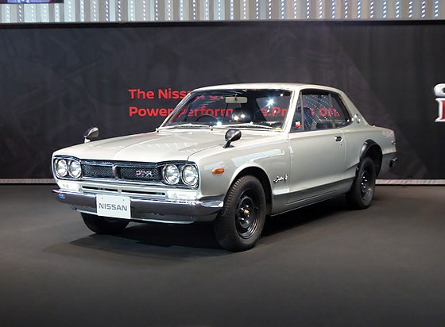
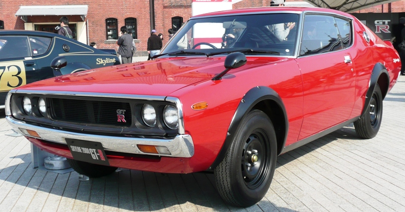
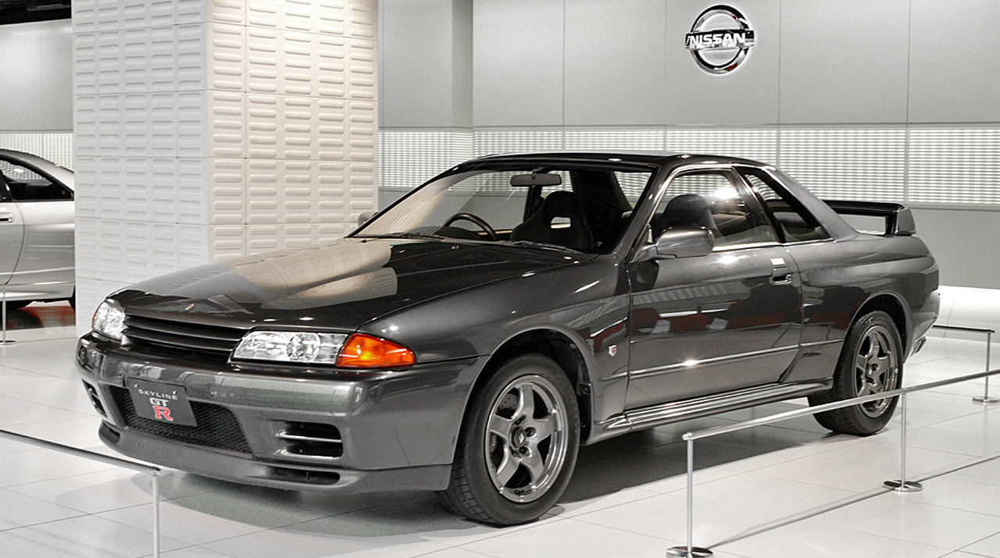
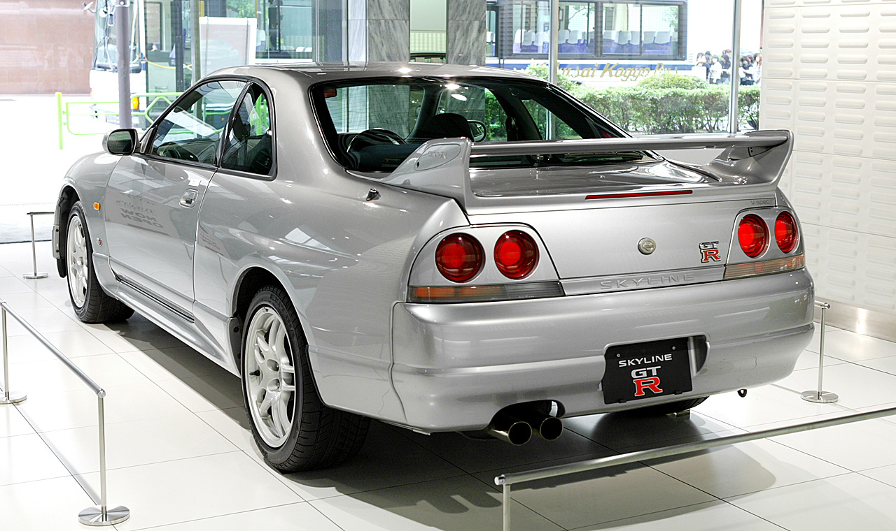
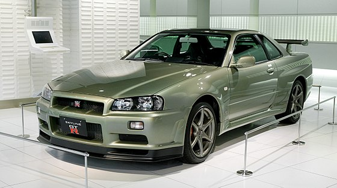

The Skyline name originated from the Prince automobile company, which developed and sold the Skyline line of sedans before merging with Nissan-Datsun.
The original Skyline, launched by Prince Motor Company in April 1957, featured a 1.5-litre engine. In 1964, the Prince Skyline GT was introduced with a 2.0-litre G7 inline-6 engine, shared with the Prince Gloria sedan. Two versions were made: the S54A with a 78 kW (105 hp) engine and the S54B with a 92 kW (123 hp) engine. Production totaled 100 units.
The GT-R abbreviation stands for Gran Turismo–Racing, while GT-B stands for Gran Turismo–Berlinetta, using Italian naming conventions to enhance sales. The S54 2000 GT-B, a predecessor of the GT-R, placed second in its first race in the 1964 Japanese GP.
The four-door PGC10 2000 GT-R achieved 33 victories in one and a half years, and by the time it reached its 50th race, it was defeated by a Mazda Savanna RX-3. By 1972, it had achieved 1,000 victories. The final original GT-R model, the KPGC110 2000GT-R, with an S20 119 kW (160 hp) engine, sold only 197 units due to the global energy crisis and never participated in a major race.
The Skyline gained popularity in the 1990s for its rear-wheel-drive configuration, while most manufacturers switched to front-wheel drive. Nissan and its performance division, Nismo, introduced various special editions with additional performance enhancements throughout its lifetime.
The first Skyline GT-R set the stage for an iconic legacy with its revolutionary design and racing spirit.
First Generation (1969-1972)
The first Skyline GT-R, designated PGC10, was launched on February 4, 1969, exclusively at Nissan Prince Store dealerships. It debuted as a four-door sedan at the October 1968 Tokyo Motor Show and was advertised alongside the Nissan R380 racecar. It featured a 2.0 L DOHC S20 Inline-six engine producing 119 kW (160 hp) and 176 N⋅m (130 lb⋅ft), paired with a 5-speed manual transmission and a limited slip differential. The PGC10 had a semi-trailing arm strut suspension and disc brakes in the front, with drum brakes in the rear.
In March 1971, the KPGC10 coupé variant was introduced. The interior was basic, with racing bucket seats, a three-spoke steering wheel, wood inserts, and aluminum pedals.
The PGC10 and KPGC10 are popularly known as Hakosuka, combining the Japanese word for "box" ("hako") and the abbreviation of "skyline" ("suka"). A total of 1,945 units were produced.

Nissan GT-R PGC10
The second-generation GT-R, though brief, left a lasting impression with its iconic Kenmeri image and performance.
Second generation (1972–1973)
The KPGC110, the successor to the KPGC10, was introduced in 1973 after debuting at the 1972 Tokyo Motor Show. It featured a 1,989 cc S20 inline-6 engine, delivering power through a 5-speed manual gearbox. The car was equipped with front and rear disc brakes and a semi-trailing ring arm suspension, with minor aerodynamic enhancements.
Known as the Kenmeri Skyline due to a popular advertisement featuring a couple named Ken and Mary, the model was impacted by the 1973 oil crisis, which reduced demand for high-performance sports cars. Only 197 units were produced before its discontinuation, marking the end of the GT-R production until the R32 in 1989.

KPGC110 GT-R
The R32 GT-R redefined racing with its groundbreaking technology and unmatched performance.
Third generation (1989–1994)
After discontinuing the Skyline GT-R in 1973, Nissan revived the GT-R nameplate in 1989 with the E-BNR32 chassis (commonly known as the R32). Designed to excel in Group A Racing, the R32 featured a twin-turbocharged 2.4 L RB20 engine, initially producing 233 kW (312 hp). To comply with Group A regulations and accommodate 10-inch-wide tyres, Nissan made the car all-wheel drive, using the ATTESA E-TS system. This decision added 100 kg (220 lb) to the car’s weight, so Nissan increased the engine displacement to 2,600 cc, placing the car in the 4,500 cc class and allowing for 11-inch-wide tyres. The final result was a power output of 441 kW (592 hp), with later racing engines producing between 373–485 kW (500–650 hp) depending on track conditions.

R32 GT-R
The R33 GT-R, a powerhouse on the track, set new standards with its groundbreaking performance and innovation.
Fourth generation (1995–1998)
The E-BCNR33 (R33), developed as a successor to the R32, was introduced in January 1995. It featured a nearly identical engine to the R32, with improved oil pump drive collar and stronger syncros in the manual gearbox. The base model R33 GT-R weighed 1,540 kg (3,395 lb).
The R33 GT-R was available in two versions: the base model and the V·Spec model, which had sportier suspension and the ATTESA E-TS Pro all-wheel drive system with an Active Limited Slip differential. A lighter V·Spec N1 model was also introduced, removing several features like ABS and air conditioning to enhance performance.
Production of the R33 ended on November 9, 1998, with the final unit being a V-Spec in Black Pearl color. Before its official release, the R33 GT-R set a lap time of 7:59.887 minutes at the Nürburgring Nordschleife, becoming the first production vehicle to break the 8-minute mark. This record was later surpassed by the Skyline GT-R R34 in 1999. In 1995, the R33 GT-R achieved a lap time of 8:01.72 minutes at the Nürburgring, driven by Motoharu Kurosawa.

Rear view of an R33 GT-R
The R34 GT-R redefined performance with cutting-edge technology and precision engineering.
Fifth generation (1999–2002)
The R34 Skyline GT-R, including the GT-R V·Spec and GT-R V·Spec N1, were introduced in January 1999. Compared to its predecessor, the R34 was shorter with a reduced front overhang, and featured glossy red valve covers. A standout addition was the 5.8" LCD multifunction display on the dashboard, showing real-time engine and vehicle statistics. The V·Spec model included additional features like intake and exhaust gas temperatures, while the Nismo Multi-function Displays offered a lap timer, G-Force meter, and boosted pressure measurement to 2 bar.
The R34 GT-R V·Spec came with the ATTESA E-TS Pro system and an Active LSD at the rear, with firmer suspension and lower ground clearance for improved aerodynamics. The V·Spec N1 model, a homologation special, lacked air conditioning, audio equipment, rear wiper, and boot lining but retained ABS. Only 38 R34 V·Spec N1 models were produced, with 12 used for Super Taikyu racing.
The V·Spec version was also modified for the UK market, including additional oil coolers, a revised ECU map, and other performance enhancements. A total of 80 units were imported to the UK, with 10 going to Hong Kong and Singapore, and 5 to New Zealand, each with specific market adjustments.

Nissan Skyline GT-R M·spec Nür (BNR34)
More information:
You can learn more about the Nissan Skyline GT-R by clicking here